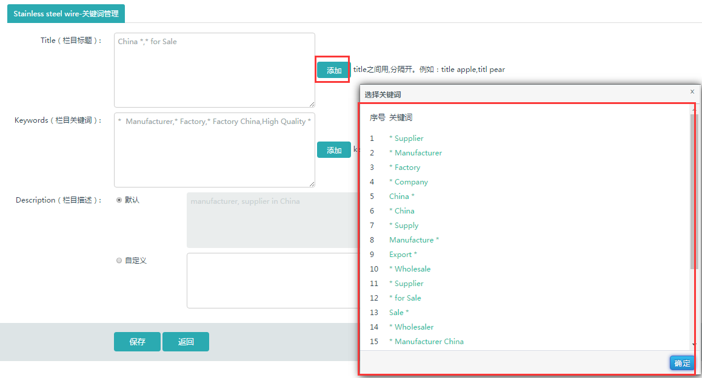
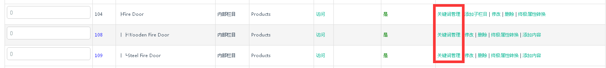

说明：栏目中的“关键词管理”添加之后会应用于他下面的子栏目，点击“添加”按钮可以对其子栏目进行长尾词的添加，添加之后，在其下面添加子栏目时，title，keywords框中会自动从所添加的长尾词中调取三个。

因此，如果要设置自动匹配某栏目的关键词，首先要在其直接上级栏目处选择“关键词管理”，在title，keywords除选择长尾词词根。可以选择多个长尾词词根，到相应栏目设置关键词处，系统会自动调取其中的三个词根。

在要设置关键词的栏目处选择“修改”，“选项设置”，可以看到，title和keywords中有多个长尾词词根，可以看到，title里的长尾词词根不仅包括上级栏目中添加的词根之后匹配的三个词根，还包括在网站管理>网站配置>网站信息中 title中添加的长尾词词根。
Keywords中仅为通过上级栏目添加而匹配出的三个长尾词词根。
编辑title，keywords，description
保存